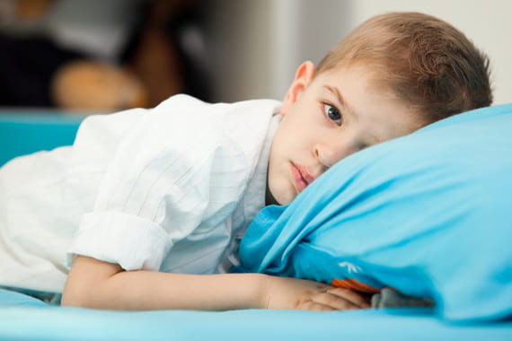
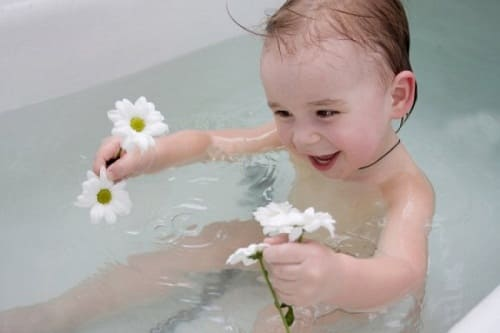

Перед сном ваш 6-летний ребенок говорит: «Ой», — и трет свои бедра и колени. Он много двигает ногами, выглядит беспокойным и просит помощи.
Типичные боли роста — распространенная особенность активных детей. Они безобидны. Боли обычно начинаются ближе к вечеру, когда ребенок жалуется, что его ноги болят и дрожат. Хотя причина болей роста неизвестна, они существуют. Ноги вашего ребенка действительно болят. Он не выдумывает эти боли и не использует их, чтобы манипулировать вами. Мы подозреваем, что боли роста вызваны переутомлением мышц ног и частым использованием ступней и ног в неподходящих условиях. Молодые мышцы и кости предназначены для бега по песку, траве и земле, а не по бетону, асфальту или твердому полу спортивного зала.
ПРИЗНАКИ И СИМПТОМЫ
У вашего ребенка обычные боли роста, если:
• они обычно появляются в конце активного дня или перед сном;
• ребенок указывает на боль в верхней части бедра или коленей, но часто не может сказать, где точно болит;
• обычно болят обе ноги;
• ребенок не жалуется на суставы, такие как тазобедренный, коленный или голеностопный;
• вы не замечаете припухлости или местной болезненности — так называемой точечной болезненности;
• боль не усиливается при движении, например, при ходьбе;
• ребенок не хромает и ходит не «необычно»;
• у ребенка нет других жалоб.

КОГДА БЕСПОКОИТЬСЯ
Признаки того, что это не просто болезнь роста и нужно обратиться за медицинской помощью, следующие:
• ребенок хромает;
• постоянная боль в одном месте на протяжении нескольких дней или ночей;
• вы нащупываете болезненный участок и/или припухлость;
• ребенок жалуется на дискомфорт или боли в спине, когда он наклоняется;
• малыш жалуется на боли в суставах — тазобедренном, коленном или голеностопном;
• боли сопровождаются лихорадкой, бледностью или другими признаками болезни.
ЧТО ДЕЛАТЬ
Так же, как при всех хронических болях, ведите таблицу болей роста, отмечая выраженность, частоту и описание боли. Обычные боли роста со временем становятся реже, слабее и более расплывчатыми в описании. Боли роста дают вам возможность усилить контакт с вашим ребенком и блистать в роли домашнего терапевта:
поддерживайте водный баланс своего ребенка. После энергичной тренировки обезвоженные мышцы могут болеть. Убедитесь, что ваш ребенок пьет много воды вовремя и сразу после занятий спортом;
• проверяйте ступни. Плоскостопие, повернутые внутрь (пронированные) ступни при ходьбе по твердой поверхности способствуют нарушению распределения веса, вызывая напряжение мышц, что приводит к их болезненности. Пусть врач обследует вашего ребенка — возможно, нужно применение ортопедических приспособлений;
• используйте подушечки для пяток. Растущие пяточные кости не предназначены для хождения по твердым поверхностям. Купите своему ребенку подушечки для пяток из пористой резины, чтобы он носил их в кроссовках. Постарайтесь покупать кроссовки с мягкими пятками.

СОВЕТ ДОКТОРОВ СИРС: ПРИМЕРНОЕ УКАЗАНИЕ ПРОТИВ ТОЧНОГО Запомните отличие примерного указания от точного. Если ребенок сомневается и не может указать точное место, где болит, — это меньший повод для беспокойства. Если он неоднократно указывает на боль в одном и том же месте, на это надо обратить больше внимания. |
Когда кости вашего ребенка полностью сформируются, они перерастут эти боли, а вы перерастете свое волнение.
Здоровье ребенка от докторов Сирс / Сирс У. и др.